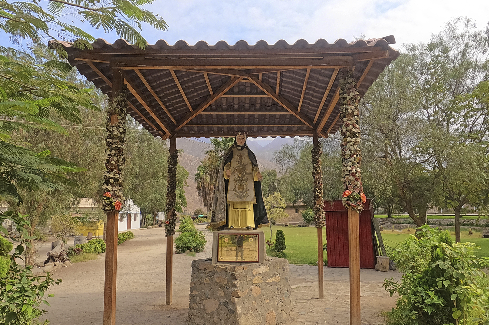
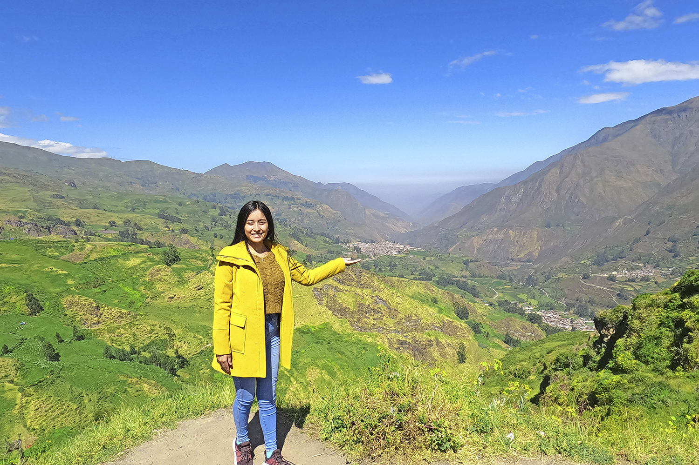
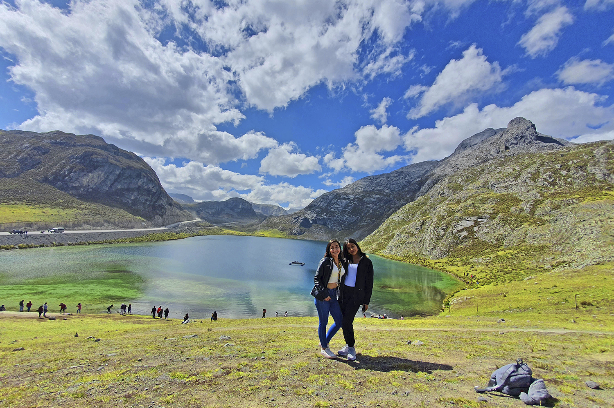
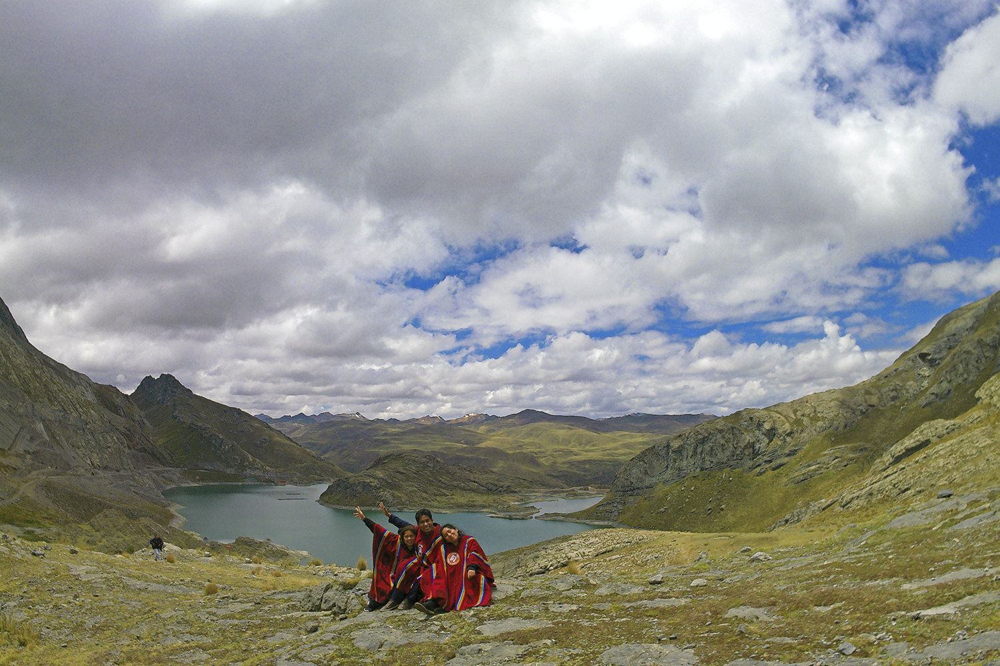
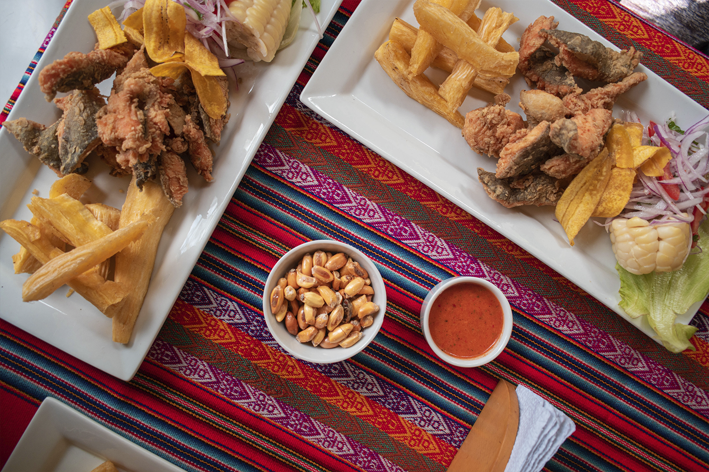
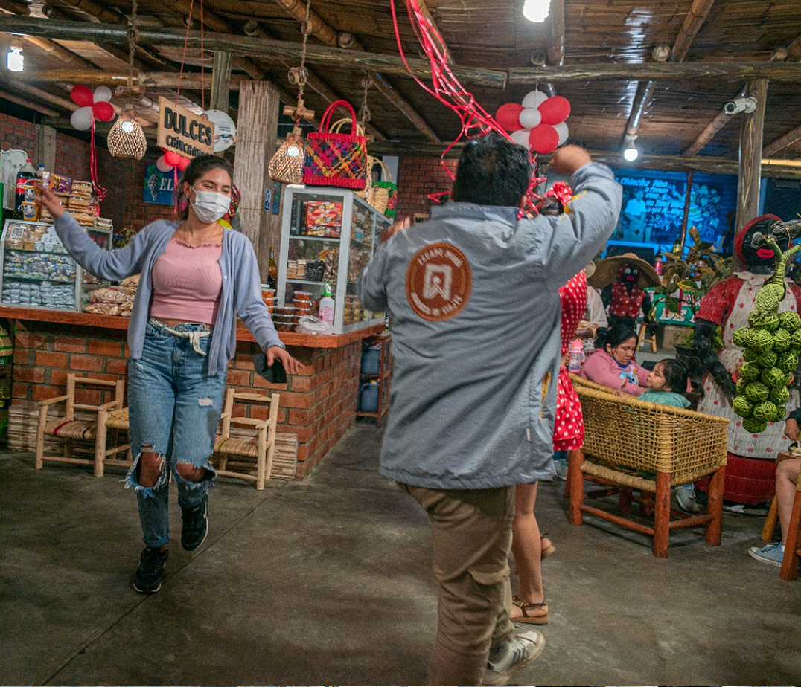
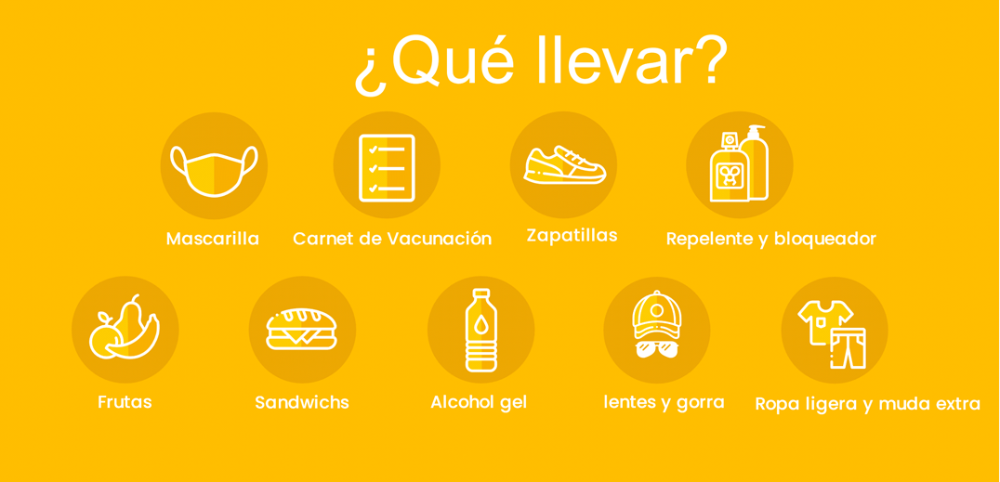

- ✅Tour Básico: S/ 89
- ✅Tour Básico para 2 personas a mas: S/ 85
- ✅Tour Básico reservado 7 dias anticipacion: S/ 79
- ✅Niños menores de 5 años no pagan, viajan totalmente gratis.
ITINERARIO
PUNTOS DE EMBARQUES
- 5:40 AM C.C. Real Plaza de Pro / Av. Trapiche / Km. 22 de Carabayllo
- 5:30 AM C.Comercial Plaza Norte, altura de Av. Thomas Valle con Panamericana Norte, única puerta que da para la Av Panamericana norte.
- 4:50 AM Centro Comercial La Rambla San Borja (Calle Ucello 162 – costado de Ripley) 10 minutos tolerancia.
1ra Parada
Iniciamos nuestra aventura haciendo
una parada en el distrito de Santa Rosa
de Quivez, para tomar un delicioso
desayuno regional y aclimatarnos.
Aqui visitaremos el Santuario de Santa
Rosa de Lima, donde vivio su niñez
Isabel Flores de Oliva o Santa Rosa de
Lima.

2ra Parada
Desembarcaremos en el mirador de
Cochapampa donde tendremos una
fabulosa vista del Valle del río Chillón y
de los diversos pueblitos y anexos de la
provincia de Canta.

3ra Parada
Llegaremos a nuestro punto principal que es la bella laguna de 7 colores, aquí
tendremos tiempo para observar el paisaje, descansar y tomarnos muchas fotos para
el recuerdo o pasear en bote (opcional). También podremos observar a la Laguna de
Chuchun, formaciones geológicas como el elefante, la tortuga, el cocodrilo y el nevado
de la Cordillera de La Viuda que rodean el paisaje. Aquí realizaremos el pago a la tierra.
De regreso, visitaremos la cascada Pomora o Melliceras donde conoceremos porque
es tan famosa y visitada por los turistas.

4ra Parada
Visitaremos la Comunidad de Huaros,
donde podremos visitar la Piscigranja si
deseamos adquirir las famosas
Truchas.
ALMUERZO: En la Comunidad de Huaros,
podremos degustar truchas,
pachamancas y otros potajes típicos de
la zona.

5ra Parada
Como última parada llegaremos al
pueblo de Canta, llamada también
Heroica Villa, por haber cumplido un rol
protagónico en las Batallas por la
independencia y en la guerra con Chile,
aquí haremos un recorrido y
degustaremos de los dulces típicos
canteños (yogurt, queso, manjar
blanco, alfajores, galletas, etc).

NUESTRO PROGRAMA INCLUYE:
- ✅Transporte turístico Lima - Canta - Lima.
- ✅Visita al Santuario de Santa Rosa de Lima.
- ✅Vista panorámica del pueblo de Yaso.
- ✅Mirador de Cochapampa.
- ✅Visita a la laguna de 7 colores.
- ✅Visita a la laguna Chuchun.
- ✅Vista panorámica del Cerro Abanico.
- ✅Vista panorámica a la cordillera de la viuda.
- ✅Visita al pueblo de Canta.
- ✅Visita a la Cascada Pomora o Las Mellizeras.
- ✅Paseo en bote (opcional por S/5 adicional).
- ✅Tour Conductor con experiencia certificada.
- ✅Degustación de dulces artesanales .
- ✅Pago y ofrenda a la Tierra.
- ✅Recuerdo de bolsita de la abundancia.
- ✅Fotografías durante el recorrido.
- ✅Botiquín de primeros auxilios.
- ✅Sorteos.
NO INCLUYE:
- Alimentacion/Gastos personales
RETORNO:
Estaremos en lima entre 9:00 pm aprox.
***Fin de nuestros servicios***
Las actividades pueden variar su orden

¿COMO RESERVAR?
- 1 Solicitar Cuentas Bancarias
- 2 Puedes reservar con el 50% y lo restante se paga al subir al bus el día del Tour.
- 3 Enviarnos el comprobante y confirmar sus reservas con Nombres, N° DNI, C.E y número telefónico .
- 4 Solicita tu boleto de abordo digital
Estamos registrados en Ministerio de Comercio y Turismo del Perú MINCETUR único requisito para agencias de viajes formales y BIOSEGURAS.
REVISA NUESTROS TERMINOS Y CONDICIONES ⬇
LINK: "https://bit.ly/36cYjLF "
 Hola, ¿en que podemos ayudarle?
Hola, ¿en que podemos ayudarle?